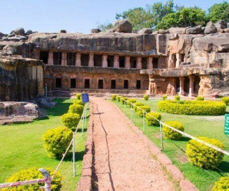
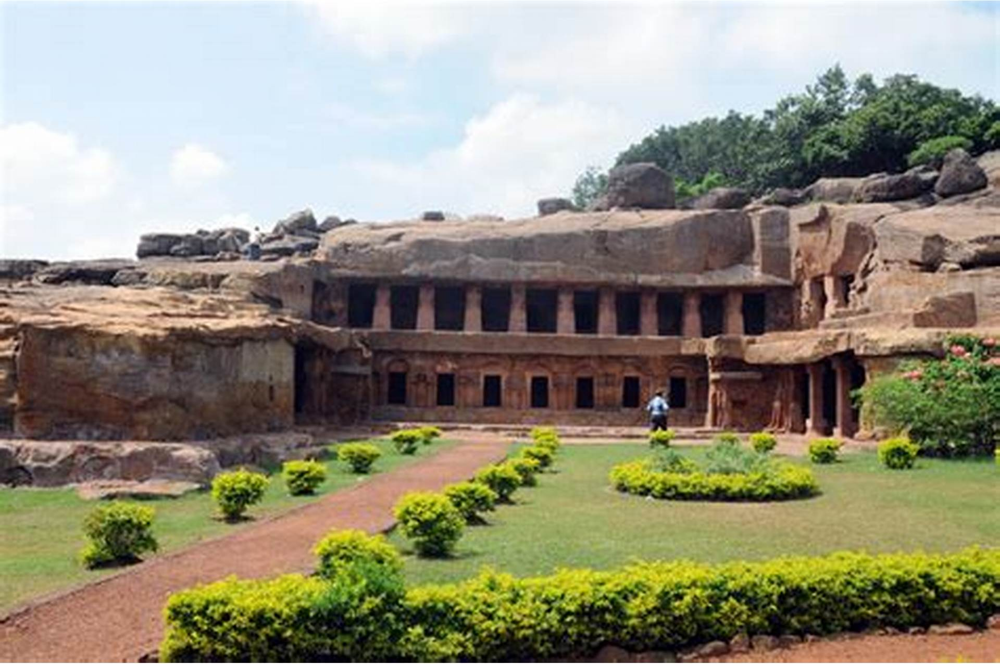

Ancient rock-cut caves with historical and religious significance
The Udayagiri and Khandagiri Caves, located near Bhubaneswar in Odisha, India, are a group of rock-cut caves with historical and religious significance. These caves were carved out as residential blocks for Jain monks during the reign of King Kharavela in the 2nd century BCE. The caves are famous for their intricate carvings, inscriptions, and sculptures that reflect the rich cultural heritage of the region.
The caves are divided into two groups: Udayagiri, meaning "Sunrise Hill," and Khandagiri, meaning "Broken Hill." Udayagiri has 18 caves, while Khandagiri has 15. Notable caves include the Rani Gumpha (Queen's Cave), Hathi Gumpha (Elephant Cave), and Ananta Gumpha. The caves feature beautiful carvings depicting scenes from Jain mythology, royal processions, and everyday life during ancient times.
The Udayagiri and Khandagiri Caves are important archaeological and historical sites that provide valuable insights into the life and culture of ancient India. The Hathi Gumpha inscription, found in Udayagiri, is a significant historical record that describes the reign of King Kharavela and his military conquests. These caves also highlight the spread of Jainism in the region during that era.
The caves are a popular tourist destination, attracting visitors with their historical importance and architectural beauty. The panoramic views of Bhubaneswar from the hilltops and the serene environment make it a perfect spot for history enthusiasts and nature lovers. Guided tours are available to help visitors understand the historical and cultural significance of the site.